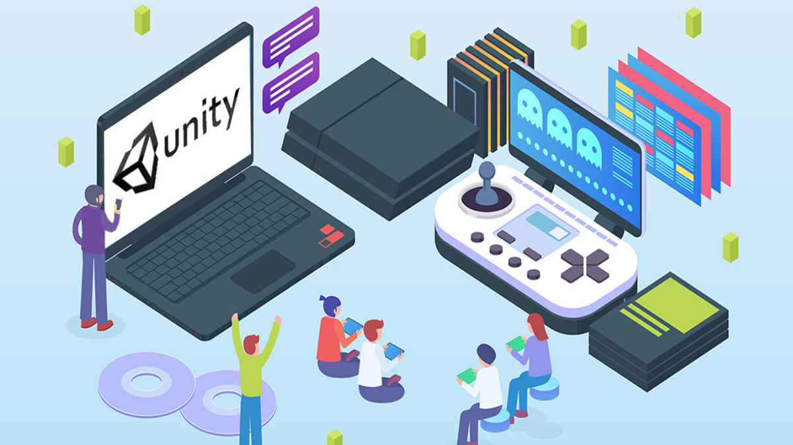
1. Algoritmalar ve Veri Yapıları
Oyunlar, çok sayıda veri ve işlemle çalışır. Algoritmalar, bu verilerin işlenmesi için kullanılan adım adım talimatlardır. Oyunlarda bu, karakter hareketlerinden düşman yapay zekasına kadar birçok farklı işlemi içerir. Veri yapıları ise, oyun içindeki verilerin nasıl organize edildiğini tanımlar. Örneğin, bir oyun dünyasında tüm nesneleri tutmak için bir liste veya dizi kullanılabilir. Bu kavramları anlamak, oyun programlamasında verimli ve etkili çözümler üretebilmek için önemlidir.
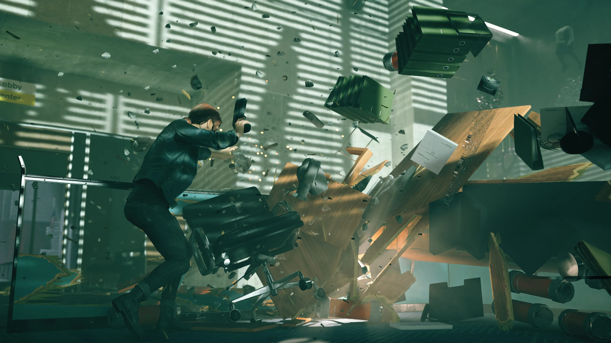
2. Fizik Motorları
Fizik motorları, oyun içindeki nesnelerin hareketlerini, çarpışmalarını ve diğer fiziksel etkileşimlerini simüle eder. Bu, bir karakterin yerçekimi etkisiyle zıplaması, bir arabayı yolda sürerken çarpışma anındaki etkiler veya topun yuvarlanması gibi olayları içerir. Oyun geliştiricileri, oyun dünyasındaki nesnelerin doğru bir şekilde hareket etmesini ve etkileşimde bulunmasını sağlamak için fizik motorlarını kullanır. Bu, özellikle aksiyon, spor ve simülasyon oyunlarında kritik bir rol oynar.
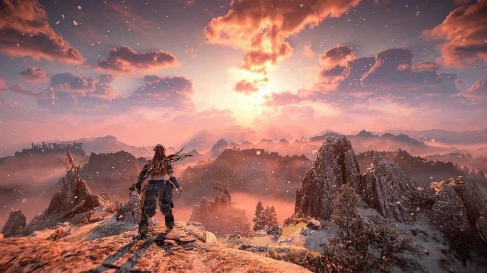
3. Grafik Programlama
Grafik programlama, oyunların görsel bileşenlerini oluşturmayı içerir. Bu, karakter modelleme, çevre tasarımı, ışıklandırma, gölgeleme ve 2D veya 3D grafiklerin render edilmesi gibi işlemleri kapsar. Grafik işleme, genellikle bir oyun motoru tarafından yapılır. Grafik motorları, bilgisayarın ekranında pikselleri ekrana doğru bir şekilde yerleştirerek görsellerin oyuncuya doğru şekilde sunulmasını sağlar. Bunun yanı sıra, oyunlarda kullanılan animasyonlar ve görsel efektler de grafik programlamanın bir parçasıdır.
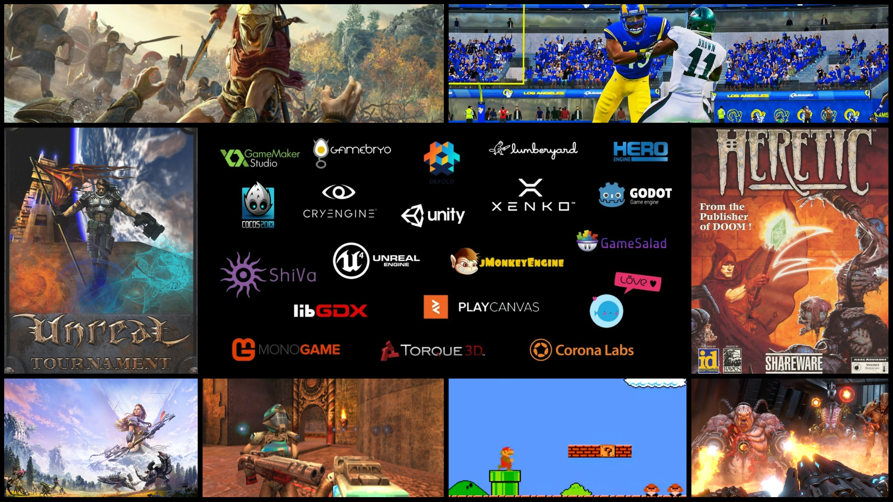
4. Oyun Motorları ve API'ler
Bir oyun motoru, oyunların geliştirilmesi için kullanılan yazılım altyapısıdır. Oyun motorları, grafikler, fizik, ses ve etkileşim gibi temel bileşenleri yönetir ve geliştiricilere bu unsurları entegre edebilecekleri araçlar sağlar. Popüler oyun motorları arasında Unity, Unreal Engine ve Godot bulunur. Ayrıca, oyun programcıları oyun motorunun sunduğu API'leri (uygulama programlama arayüzleri) kullanarak, oyun içindeki özellikleri özelleştirir ve yeni işlevler ekler.
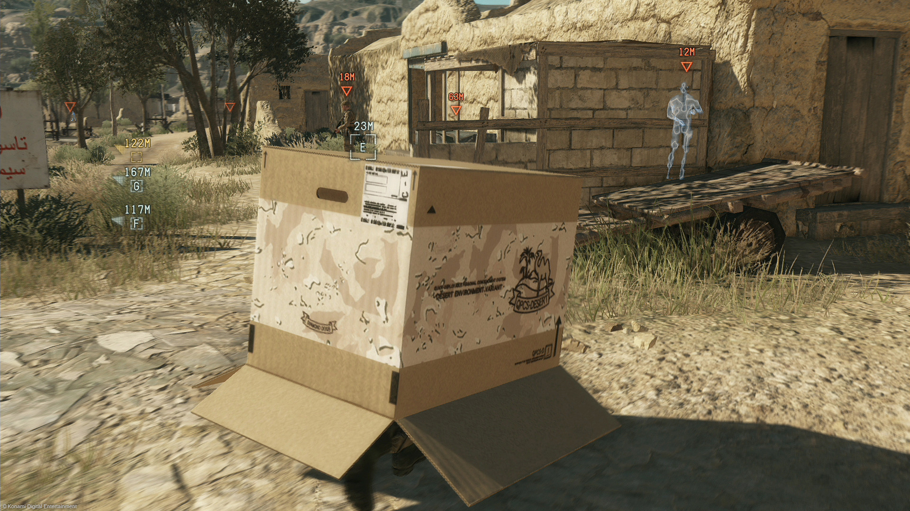
5. Yapay Zeka (AI)
Oyunlardaki yapay zeka, oyuncularla etkileşimde bulunan oyun karakterlerinin (yapay düşmanlar veya NPC'ler) davranışlarını belirler. Yapay zeka, belirli kurallar ve algoritmalar aracılığıyla kararlar alarak oyun dünyasında akıllıca hareket eder. Basit bir yapay zeka, bir düşmanın sadece oyuncuya doğru hareket etmesini sağlayabilirken, daha gelişmiş yapay zeka düşmanlar, oyuncunun hareketlerine tepki verir, stratejik davranışlar sergiler ve çevreyi analiz eder. Yapay zeka, oyunlardaki zorluk seviyesini belirleyen önemli bir unsurdur.
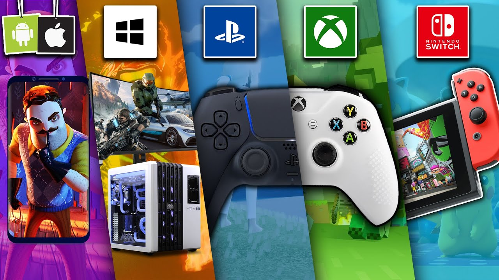
6. Çoklu Platform Desteği
Oyunlar, farklı platformlarda çalışabilir olmalıdır. PC, konsollar, mobil cihazlar ve hatta sanal gerçeklik (VR) sistemleri gibi birçok platform için oyun geliştirme, çeşitli optimizasyonları ve adaptasyonları gerektirir. Çoklu platform desteği sağlamak, oyun programlamasında önemli bir beceridir. Geliştiriciler, oyunlarının farklı cihazlarda sorunsuz bir şekilde çalışmasını sağlamak için kodu optimize eder, platforma özel özellikleri entegre eder ve kullanıcı arayüzlerini (UI) uyarlamalar yapar.
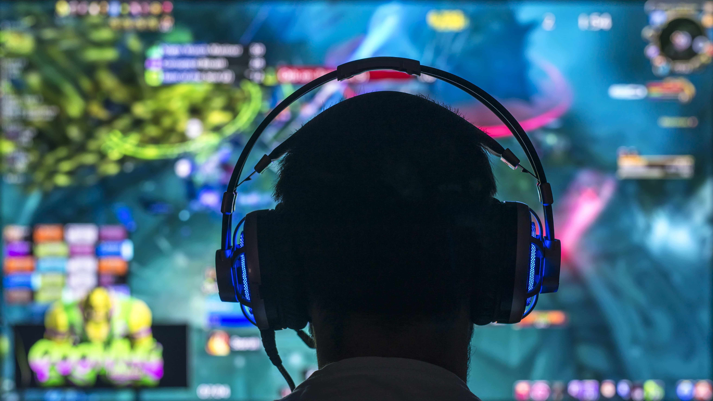
7. Ses Programlama
Ses, oyun deneyiminin önemli bir parçasıdır. Oyunlarda müzik, efekt sesleri, diyaloglar ve çevresel sesler, oyuncunun dünyayı nasıl algıladığını etkiler. Ses programlama, ses dosyalarının oyun motoruna entegre edilmesini, ses efektlerinin doğru zamanda çalmasını ve müzikle oyun atmosferinin uyumlu olmasını sağlar. Oyunlardaki ses sistemleri ayrıca 3D ses desteği ile oyuncunun etrafındaki ses kaynaklarının doğru bir şekilde yönlendirilmesini sağlar.
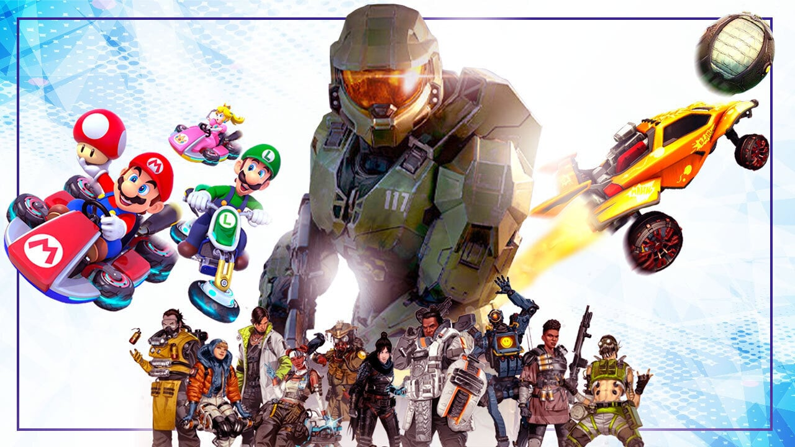
8. Ağ ve Çoklu Oyuncu Desteği
Ağ programlaması, oyunların çevrimiçi çok oyunculu modlarını mümkün kılar. Bu, oyuncuların birbirleriyle veya birbirlerine karşı oynayabilmesi için gerekli olan iletişimi yönetir. Oyun programcıları, sunucu ve istemci arasında veri iletimini sağlamak, oyuncular arasında senkronizasyonu sağlamak ve düşük gecikme süreleri oluşturmak için ağ programlamasını kullanır. Bu özellik, özellikle çevrimiçi çok oyunculu oyunlarda (MMO'lar gibi) büyük önem taşır.
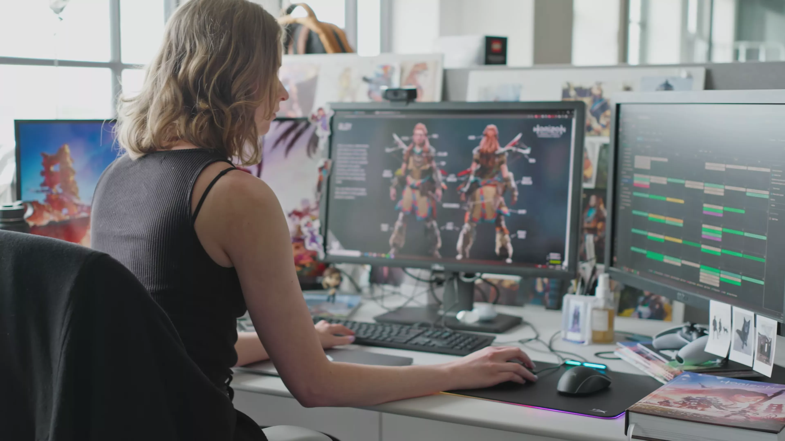
9. Oyun Tasarımı
Oyun tasarımı, bir oyunun temel mekaniği, amacı, kuralları ve oyun dünyasının yapısını tanımlar. Tasarımcılar, oyuncunun deneyimini yönlendiren unsurları oluşturur. Bu, seviyelerin tasarımından, görevlerin yaratılmasına ve oyun dünyasındaki etkileşimli öğelere kadar geniş bir alanı kapsar. İyi bir oyun tasarımı, oyuncunun oyunla nasıl etkileşime gireceğini ve nasıl bir deneyim yaşayacağını belirler.
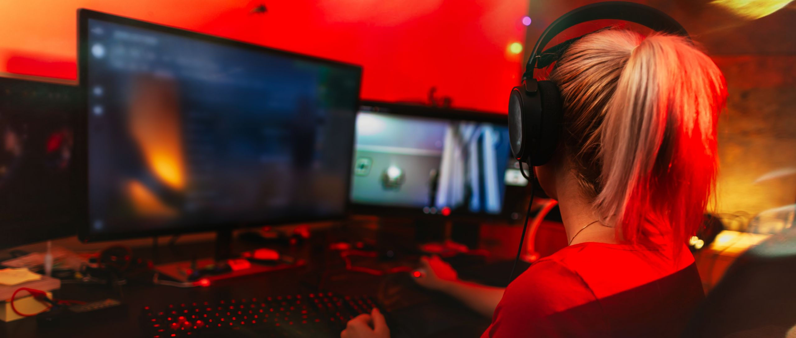
10. Oyun Testi ve Hata Ayıklama
Bir oyunun geliştirilmesi sürecinde, yazılımda meydana gelen hataları tespit etmek ve düzeltmek çok önemlidir. Oyun testleri, oyunun oynanabilirliğini kontrol etmek, hataları bulmak ve kullanıcı geri bildirimleri almak için yapılır. Hata ayıklama ise oyun kodundaki hataları bulma ve düzeltme işlemidir. Bu aşama, oyun çıktıktan sonra da devam eder çünkü kullanıcılar farklı cihazlarda farklı sorunlarla karşılaşabilirler.
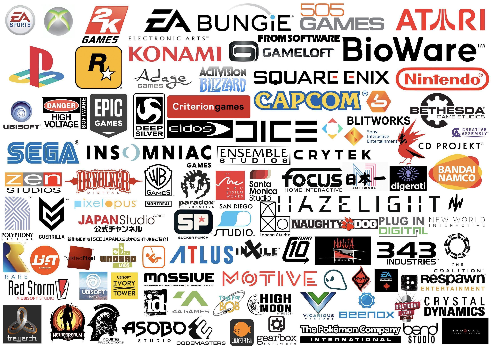
11. Oyun Yayınlama ve Pazarlama
Oyun programlamasının son aşaması, oyunun kullanıcılarla buluşturulmasıdır. Yayınlama süreci, oyunun pazarlama stratejileri, dağıtım platformları (Steam, Epic Games Store, konsol mağazaları vb.) ve oyuncu geri bildirimlerini içerir. Bir oyun başarılı olmak için iyi bir pazarlama planına ve doğru platformda yayınlanmaya ihtiyaç duyar. Ayrıca, oyun güncellemeleri ve yeni içerikler eklemek, oyuncu kitlesinin ilgisini canlı tutmak için önemlidir.